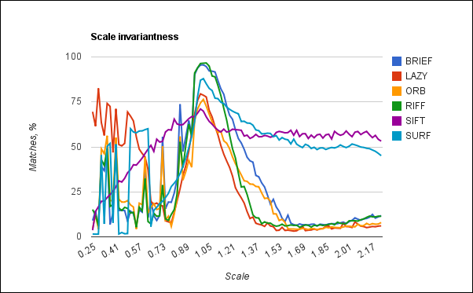
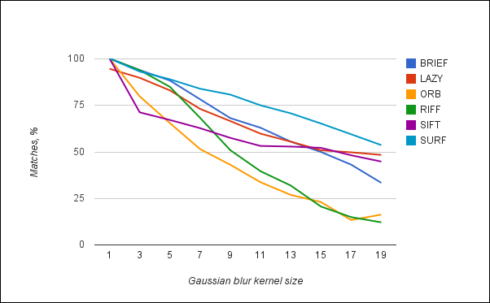

Sharing my research work of behavior of several types of feature descriptors. This article is an update of old “Comparison of feature descriptors” post. I’ve added a brand new ORB feature descriptor to the test suite, also SIFT descriptor included as well. And a new version of LAZY descriptor present in this test too.
Introduction
For this test i have written special test framework, which allows me to easily add the new kind of descriptors and test cases and generate report data in CSV-like format. Than i upload it in Google docs and create this awesome charts. Five quality and one performance test was done for each kind of descriptor.
Test cases
- Rotation test - this test shows how the feature descriptor depends on feature orientation.
- Scaling test - this test shows how the feature descriptor depends on feature size.
- Blur test - this test shows how the feature descriptor is robust against blur.
- Lighting test - this test shows how the feature descriptor is robust against lighting.
- Pattern detection test - this test performs detection of planar object (image) on the real video. In contrast to the synthetic tests, this test gives a real picture of the overall stability of the particular descriptor.
- Performance test is a measurement of description extraction time. All quality tests works in similar way. Using a given source image we generate a synthetic test data: transformed images corresponding feature points. The transformation algorithm depends on the particular test. For the rotation test case, it’s the rotation of the source image around it’s center for 360 degrees, for scaling - it’s resizing of image from 0.25X to 2x size of original. Blur test uses gaussian blur with several steps and the lighting test changes the overall picture brightness. The pattern detection test deserves a special attention. This test is done on very complex and noisy video sequence. So it’s challenging task for any feature descriptor algorithm to demonstrate a good results in this test. The metric for all quality tests is the percent of correct matches between the source image and the transformed one. Since we use planar object, we can easily select the inliers from all matches using the homography estimation. I use OpenCV’s function cvFindHomography for this. This metric gives very good and stable results. I do no outlier detection of matches before homography estimation because this will affect the results in unexpected way. The matching of descriptors is done via brute-force matching from the OpenCV.
Rotation test

In this test i obtain pretty expectable results, because all descriptors are rotation invariant expect the BRIEF. Slight changes in stability can be explained by the feature orientation calculation algorithm and descriptor nature. A detailed study of why the descriptor behaves exactly as it is, takes time and effort. It’s a topic for another article. Maybe later on….
Scaling test

SURF and SIFT descriptors demonstrate us very good stability in this test because they do expensive keypoint size calculation. Other descriptors uses fixed-size descriptor and you can see what it leads to. Currently for LAZY descriptor i do not have separate LAZY feature detector (i use ORB detector for tests) but I’m thinking on lightweight feature detector with feature size calculation, because it’s a must-have feature. Actually, scale invariance is much more important rather than precise orientation calculation.
Blur test

In this test i tried to simulate the motion blur which can occurs if camera moves suddenly. All descriptors demonstrate good results in this test. By “good” I mean that the more blur size is applied the less percent of correct matches is obtained. Which is expected behavior.
Lighting test

In lighting test the transformed images differs only in overall image brightness. All kinds of descriptors works well in this case. The major reason is that all descriptors extracted normalized, e.g the norm_2 of the descriptor vector equals 1. This normalization makes descriptor invariant to brightness changes.
Pattern detection on real video

Detection of the object on real video is the most complex task since ground truth contains rotation, scaling and motion blur. Also other objects are also present. And finally, it’s not HD quality. These conditions are dictated by the actual conditions of application of computer vision. As you can see on diagram, the SIFT and SURF descriptors gives the best results, nevertheless they are far away from ideal, it’s quite enough for such challenging video. Unfortunately, scale-covariant descriptors show very bad results in this test because pattern image appears in 1:1 scale only at the beginning of the video (The “spike” near frame 20). On the rest of the video sequence target object moves from the camera back and scale-covariant descriptors can’t handle this situation.